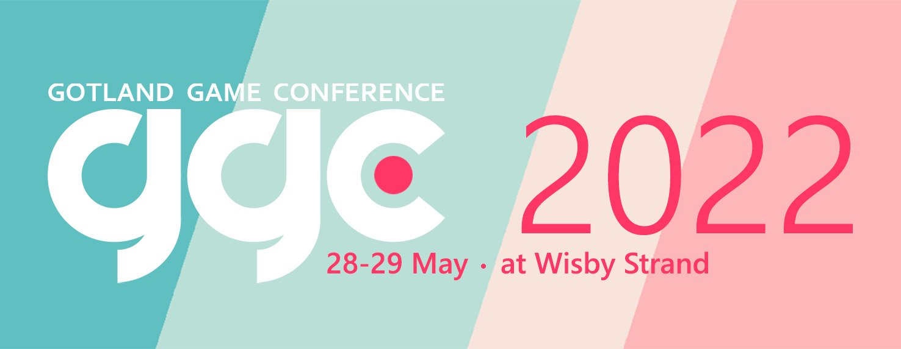
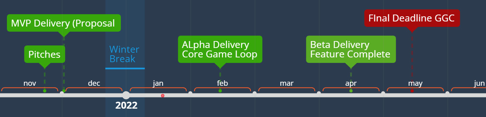

Student Studio Initiative
Helping people realize their objectives.
Cancelled
Due to school work taking priority and the teams deciding to put the project on the back burner we decided to put a stop to this since school took priority over a side project. Fortunately some of the teams worked slowly towards a product and two of them managed to present at GGC 2022 one of them winning the Best In Show award. I’ve learnt a lot about how to help others and how to motivate people to work efficiently.
TL;DR
I pushed and created a studio of sorts where different teams could come for help making their games, here I’ve been helping providing resources, meeting deadlines, easing collaboration and any other assistance the teams may need to complete their games on time to present them in the Gotland Game Conference.
Overview
When I started my master’s degree I saw that the other students wanted to do more work, that they wanted to go beyond what the university proposed and to make the games THEY wanted. But at the same time they wouldn’t commit, they would push and push what they wanted because of any kind of reason. Because of this, I proposed my teachers to create the student studio. A place where students could join and we would help them make their games, not by making them for them but by providing them with the tools they’d need to make them.
- Platform
- Windows
- Engine
- Unity3D & Unreal Engine
- Language
- C# & C++
- Development Time
- 8 Months
- Teams
- 5
- Role
- Project Manager
Why did I push the concept of a Student Studio?
When the degree started I realized that people came from all kinds of different backgrounds, people from many different countries and of different ages and almost none of them had any experience in making games. After talking with some teachers I came aware of a conference hosted by our university (Uppsala University) here in Gotland called GGC (Gotland Game Conference), where students would be able to compete with each other for different prizes, but mainly, a place where people could showcase their work.
What’s been going on so far?
November 23rd
Here we started with pitch presentations, a place where students would pitch their ideas to everyone interested. Here people could ask to join any team they would be interested on. Presenters would have to show their ideas and also mention what kind of help they would need starting up (i.e. Programming, art, design etc.)
December 2nd
This day was an MVP establishment, here the different teams had to present their MVP, they had to define what it would look like and make it realistic considering the skills available to them at the time. This showed me and the volunteer teachers what kind of work they’re going to be needing and for us to prepare in advance. We quickly realized that there is a lack of programming experience in the teams and we decided to ask for help from programming teachers to create a programming lab where the groups could ask questions and get help. From here until mid-February the teams have been working to reach Alpha stage of their games, or as close to it as possible.

A general breakdown of the timeline since the start of the project until the deadline for GGC which is to take place on June 1st.